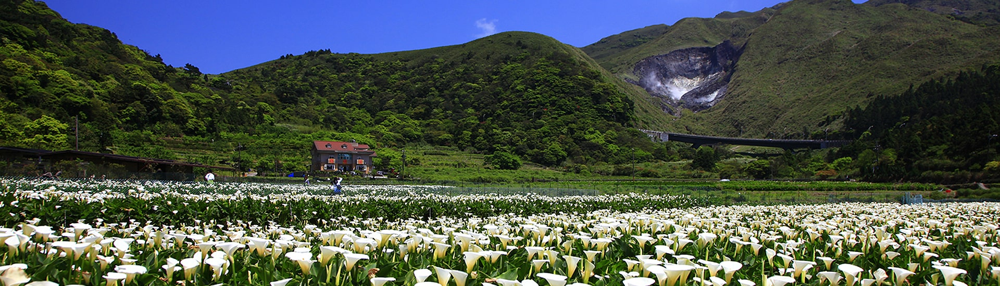

Taipei is Taiwan's largest city as well as its economic, political, and cultural center. It is a modern cosmopolitan metropolis with a lively and diversified face, filled with exuberance.
From the world's tallest building (2004~2010) to the biggest collection of Chinese art, Taipei invites you into a world of fascinating contrasts - a mix of the modern and traditional, with a generous dash of energy and friendly smiles to make this one of your most memorable trips to Asia.
The cultural kaleidoscope of Taiwan's capital city pulses wherever you go. Incense - veiled temples dating back to dynastic times blend seamlessly with a neon street life of a decidedly more modern era. Taipei has dozens of world - class restaurants where gourmets can sample the best regional Chinese cuisine; and for the gourmand, there are plenty of night markets serving up scrumptious evening snacks in an environment of chaotic excitement and fun.
The polarities of Taipei are vividly present as well in the joining of the urban and natural. Just a few minutes from the heart of the city you can soak away the cares of the world in mineral - rich hot springs nestled in the lush mountain foothills ringing the Taipei Basin. And throughout the city there are plenty of trails, parks and other oases of tranquility to lift and invigorate your spirits.
Whether you're just stopping over en route to another Asian destination, or planning a longer stay, Taipei is a many-faceted treasure that will call you back again and again. Discover the heart of Asia in beautiful Taipei!
Keelung belongs to northern Taiwan, with mountains surrounding on three sides, while Donghai (The Eastern Sea) in its north front. Serving as a natural harbor with immense water, Keelung has its bay cut into downtown deeply.
Within the city are much more slopes than planes, and moreover, the protective Keelung Islet and Hoping Islet screen on both sides of the water. These factors mentioned above have contributed to this natural and strategically difficult point, which combines roles of commercial, military, and fishing harbor, yet most importantly, keeps guard at the gates of the whole Taipei area. Famous foods in Keelung include the night market in front of the temple gate, Lienjen Cake Store, Lihu Cake Store, and Taiyanggu (Sun Valley) Honey Store.
The city of Yilan is located in the central and most favored part of the Lanyang Plain. Streams and rivers provide a constant source of replenishment for the nutrients in the soil here, making Yilan a breadbasket county.
Yilan looks out to the sea on Taiwan's Northeast Coast, with mountains on the three other sides forming a unique geography that has nurtured an equally distinctive cultural landscape and human warmth. The county is home to Asia's second longest highway tunnel, the Hsuehshan Tunnel, which has reduced the driving time between Yilan and Taipei to less than 50 minutes. From natural environments and cold and hot springs to a wealth of ocean recreation resources and verdant country scenes, Yilan offers the perfect setting to slow down and enjoy nature at its best.

{kind=link}
{kind=link}
{kind=link}
{kind=link}
{kind=link}
{kind=link}
{kind=link}
{kind=link}